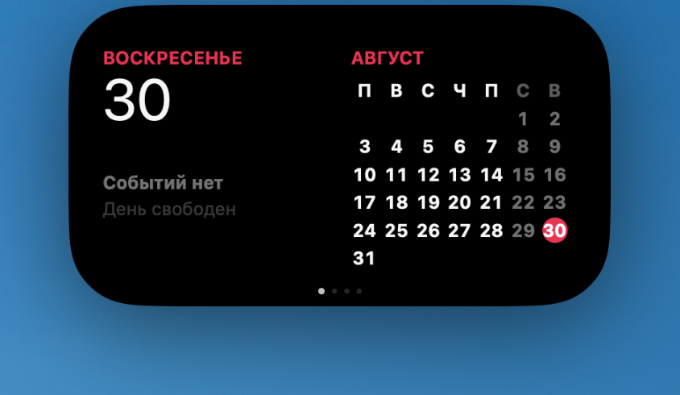
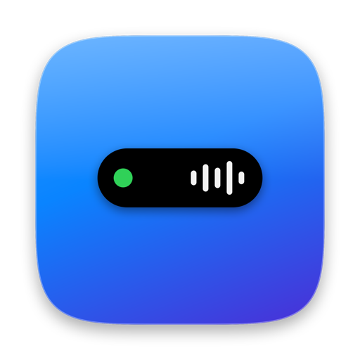
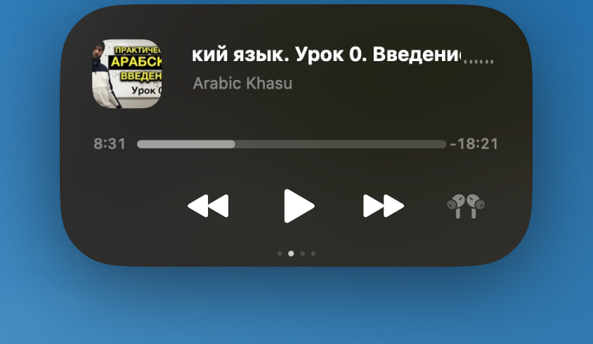
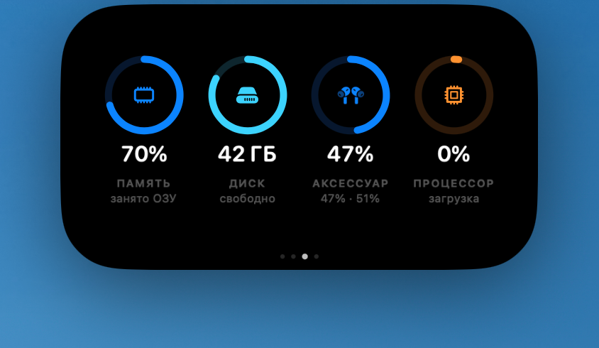
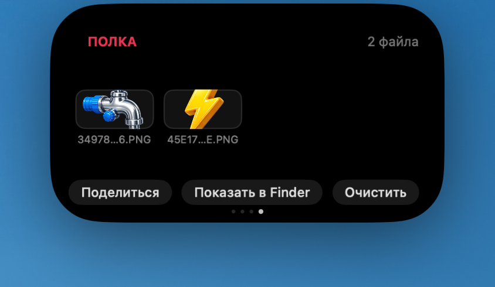
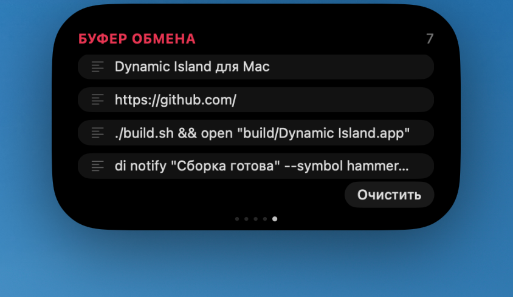
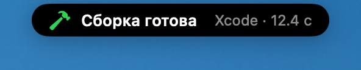
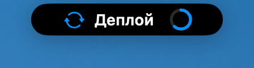
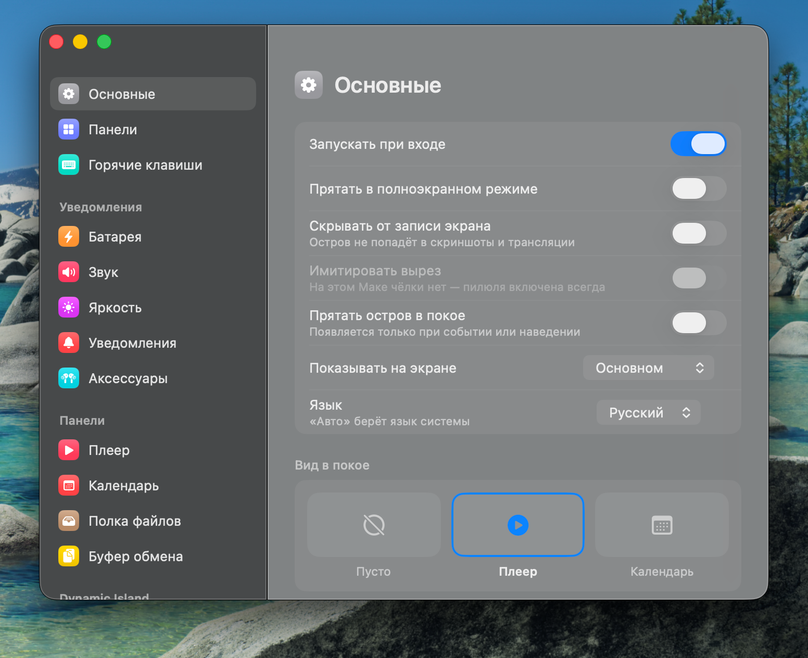

Календарь
День, сетка месяца и ближайшие события. Если у встречи есть ссылка на Zoom, Meet или Teams, появляется кнопка «Присоединиться», а за несколько минут до начала остров напомнит сам.


Панель у верхней кромки экрана: на Маках с чёлкой обнимает вырез, на Маках без чёлки — плавающая пилюля. Календарь, плеер, системные виджеты, полка для файлов, история буфера обмена и Live Activities — всё в одном месте.
Нажми на пилюлю
Любую можно выключить, переставить местами, открыть горячей клавишей или из терминала.
День, сетка месяца и ближайшие события. Если у встречи есть ссылка на Zoom, Meet или Teams, появляется кнопка «Присоединиться», а за несколько минут до начала остров напомнит сам.

Обложка, бегущая строка и перемотка. «Что играет» читается системно, поэтому виден любой плеер: Music, Spotify, вкладка браузера, QuickTime. Устройство вывода переключается прямо в панели.

До четырёх карточек на выбор из восьми: батарея, память, диск, процессор, сеть, заряд аксессуаров, таймер с пресетами и свои быстрые действия.

Перетащи файлы на остров и утащи обратно, когда понадобятся. Помнит файлы между запусками, принимает текст и картинки, умеет «Поделиться».

История копирований — тап возвращает запись в буфер. Пароли из менеджеров паролей в историю не попадают.

Короткие карточки в свёрнутом виде: смена трека, подключение питания, низкий заряд, подключение AirPods с уровнем заряда, таймеры, встречи — и свои события из скриптов.


Всё настраивается в отдельном окне с сайдбаром — ⌘, из значка в строке меню. На самом острове кнопок нет.

Установщика нет: приложение — один бандл, который переносится в «Программы».
Получится «Dynamic Island.app» — перетащи его в папку «Программы».
Правая кнопка по приложению → «Открыть» → «Открыть». Обычный двойной клик в первый раз откажет — почему, ниже.
Календарь, Автоматизация и Универсальный доступ спрашиваются только когда впервые понадобятся. Без них всё тоже работает — просто эти функции молчат.
Почему macOS говорит, что разработчик не проверен. Приложение подписано локально, а не платным сертификатом Apple Developer, поэтому не заверено нотариально. Именно поэтому исходный код открыт полностью — его можно прочитать и собрать самому. Правой кнопкой → «Открыть» достаточно; если удобнее через терминал:
Нужны macOS 14+ и Xcode Command Line Tools. Сторонних пакетов нет: build.sh зовёт swiftc напрямую.
Всё, что показывает остров, можно дёрнуть из скрипта, Makefile или CI.
У приложения свой апдейтер вместо Sparkle — тот стал бы зависимостью. Пока адрес манифеста в настройках пуст, приложение вообще не ходит в сеть. Вставь этот адрес, чтобы получать обновления отсюда: